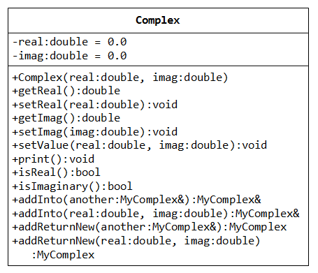
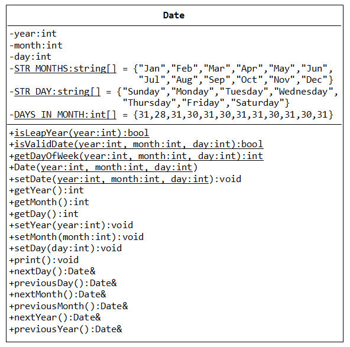

Example: The Time Class Version 2 - Using References
Further to our earlier version of Time class, suppose that we wish to support cascaded operations on a Time instance, such as t.nextSecond().nextSecond().print(). We could let nextSecond() to return "this" instance by reference. The cascaded operations t.nextSecond().nextSecond().print() shall be read as ((t.nextSecond()).nextSecond()).print(). t.nextSecond() returns a reference to "this" instance, which is then used to invoke the second operation, and so on.
Time.h
class Time {
private:
......
public:
Time & nextSecond(); // Return a reference to "this" instance
......
};
In the function prototype, we declare that the nextSecond() member function returns a reference to a Time object. The return reference can be used to invoke a member function of the class. For example, t.nextSecond().nextSecond() is interpreted as (t.nextSecond()).nextSecond(). Our previous version returns void, which cannot be used further.
Time.cpp
// Increase this instance by one second and return this instance by reference Time & Time::nextSecond() { if (++second == 60) { second = 0; if (++minute == 60) { minute = 0; if (++hour == 24) { hour = 0; } } } return *this; // Return this instance by reference // "this" is a pointer to this instance. *this refers to this instance. }
C++ has a special keyword this, which contains a pointer to this instance. Hence, *this refers to this instance, which is returned by reference back to the caller corresponding to the return type Time &.
TestTime.cpp
Time t1(23, 59, 58);
t1.print(); // 23:59:58
t1.nextSecond();
t1.print(); // 23:59:59
t1.nextSecond().nextSecond().print(); // 00:00:01
t1.print(); // 00:00:01
Exercise
Try modifying setHour(), setMinute() and setSecond() to support cascaded operations such as aTime.setHour(22).setMinute(29).setSecond(20).print().
Example: The Time Class Version 3 - Exception Handling
Input validation is necessary. For example, in setHour(int h), we should check that the given input h is between 0 and 23. Checking input is simple, but what to do if the input is invalid is tricky. For example, we could print an error message and abruptly terminate the program (via the exit(1) in <cstdlib>); we could print a warning message, set the hour to 0, and continue the program with a hour value may or may not be desired. Both approaches are less than ideal.
void Time::setHour(int h) {
if (h >= 0 && h <= 23) {
hour = h;
} else {
cout << "Error: Invalid hour! Hour shall be 0-23." << endl;
exit(1); // Terminate the program abruptly!!!
}
}
void Time::setHour(int h) {
if (h >= 0 && h <= 23) {
hour = h;
} else {
cout << "Warning: Invalid hour! Hour shall be 0-23. Set to 0." << endl;
hour = 0; // Program continues with a hour value may or may not be desired?
}
}
Instead, C++ provides an exception handling facility (in header <stdexcept>) to properly and gracefully handle exceptions. Let's modify the codes to perform input validation using the C++ exception handling facility.
Time.h
1 2 3 4 5 6 7 8 9 10 11 12 13 14 15 16 17 18 19 20 21 22 23 |
/* Header for the Time class (Time.h) */ #ifndef TIME_H #define TIME_H class Time { private: int hour; // 0 - 23 int minute; // 0 - 59 int second; // 0 - 59 public: Time(int h = 0, int m = 0, int s = 0); int getHour() const; void setHour(int h); int getMinute() const; void setMinute(int m); int getSecond() const; void setSecond(int s); void setTime(int h, int m, int s); void print() const; }; #endif |
Time.cpp
1 2 3 4 5 6 7 8 9 10 11 12 13 14 15 16 17 18 19 20 21 22 23 24 25 26 27 28 29 30 31 32 33 34 35 36 37 38 39 40 41 42 43 44 45 46 47 48 49 50 51 52 53 54 55 56 57 58 59 60 61 62 63 64 65 |
/* Implementation for the Time Class (Time.cpp) */ #include <iostream> #include <iomanip> #include <stdexcept> // Needed for exception handling #include "Time.h" using namespace std; Time::Time(int h, int m, int s) { // Call setters to perform input validation setHour(h); setMinute(m); setSecond(s); } int Time::getHour() const { return hour; } void Time::setHour(int h) { // with input validation if (h >= 0 && h <= 23) { hour = h; } else { throw invalid_argument("Invalid hour! Hour shall be 0-23."); // need <stdexcept> } } int Time::getMinute() const { return minute; } void Time::setMinute(int m) { if (m >= 0 && m <= 59) { minute = m; } else { throw invalid_argument("Invalid minute! Minute shall be 0-59."); // need <stdexcept> } } int Time::getSecond() const { return second; } void Time::setSecond(int s) { if (s >= 0 && s <= 59) { second = s; } else { throw invalid_argument("Invalid second! Second shall be 0-59."); // need <stdexcept> } } void Time::setTime(int h, int m, int s) { // Call setters to validate inputs setHour(h); setMinute(m); setSecond(s); } void Time::print() const { cout << setfill('0'); cout << setw(2) << hour << ":" << setw(2) << minute << ":" << setw(2) << second << endl; } |
Program Notes:
- void Time::setHour(int h)
if (h >= 0 && h <= 23) {
hour = h;
} else {
throw invalid_argument("Invalid hour! Hour shall be 0-23.");
}
}
We shall illustrate the input validation with thesetHour()member function. It assigns the givenhtohourifhis a valid hour. Otherwise, we use the C++ exception handling facility to throw an exception object of the typeinvalid_argument(defined in<stdexcept>header). This allows the caller to catch the exception and gracefully process the abnormal condition (to be illustrated later in the test driver). - Time::Time(int h, int m, int s) {
setHour(h);
setMinute(m);
setSecond(s);
}
In the constructor, we invoke thesetHour(),setMinute()andsetSecond(), which perform input validation, instead of direct assignment. We also modifiedsetTime()in a similar manner.
TestTime.cpp
1 2 3 4 5 6 7 8 9 10 11 12 13 14 15 16 17 18 19 20 21 22 |
/* Test Driver for the Time class (TestTime.cpp) */ #include <iostream> #include <stdexcept> // Needed for exception handling #include "Time.h" using namespace std; int main() { // Time t2(25, 0, 0); // program terminates abruptly // t2.print(); // The rest of program will not be run // Graceful handling of exception try { Time t1(25, 0, 0); // Skip the remaining statements in try-clause and // jump to catch-clause if an exception is thrown t1.print(); // Continue to the next statement after try-catch, if there is no exception } catch (invalid_argument& ex) { // need <stdexcept> cout << "Exception: " << ex.what() << endl; // Continue to the next statement after try-catch } cout << "Next statement after try-catch" << endl; } |
Program Notes:
- Time t1(25, 0, 0);
If you run the above statements (un-comment lines 8 and 9) without catching the exception, the program terminates abruptly (i.e., the remaining statements will not be run) with the following error message:terminate called after throwing an instance of 'std::invalid_argument' what(): Invalid hour! Hour shall be 0-23.
- try {
Time t2(25, 0, 0);
t2.print();
} catch (invalid_argument& ex) {
cout << "Exception: " << ex.what() << endl;
}
However, if you enclose the statements in a try-catch construct as above, when an exception occurs in one of the statement in the try-clause, the remaining statements in the try-clause are skipped, and control transferred to the catch-clause. In this case, the catch-clause catches theinvalid_argumentexception thrown, run the catch-body. The program then continues to the next statement after the try-catch. In this way, your program can gracefully process the abnormal condition (e.g., to close the file and resource) instead of abrupt termination.
Object Reference, Pointer and Array with Dynamic Allocation (Advanced)
We shall use the above Time class to illustrate object pointer, reference and array, with dynamic allocation.
1 2 3 4 5 6 7 8 9 10 11 12 13 14 15 16 17 18 19 20 21 22 23 24 25 26 27 28 29 30 31 32 33 34 35 36 37 38 39 40 41 42 43 44 45 46 47 |
/* Test object pointer, reference and array (TestTimeObject.cpp) */ #include <iostream> #include "Time.h" using namespace std; int main() { // Ordinary object Time t1(1, 2, 3); t1.print(); // 01:02:03 // Object pointer Time* ptrT1 = &t1; (*ptrT1).print(); // 01:02:03 ptrT1->print(); // 01:02:03 // anObjectPtr->member is the same as (*anObjectPtr).member // Object reference Time& refT1 = t1; // refT1 is an alias to t1 refT1.print(); // 01:02:03 // Dynamic allocation Time* ptrT2 = new Time(4, 5, 6); // allocate dynamically ptrT2->print(); // 04:05:06 delete ptrT2; // deallocate // Object Array Time tArray1[2]; // tArray1 is an array of Time with 2 elements // Use default constructor for all elements tArray1[0].print(); // 00:00:00 tArray1[1].print(); // 00:00:00 Time tArray2[2] = {Time(7, 8, 9), Time(10)}; // Invoke constructor tArray2[0].print(); // 07:08:09 tArray2[1].print(); // 10:00:00 Time* ptrTArray3 = new Time[2]; // ptrTArray3 is a pointer to Time // Dynamically allocate an array of Time with 2 elements via new[] ptrTArray3[0].print(); // 00:00:00 ptrTArray3[1].print(); // 00:00:00 delete[] ptrTArray3; // Deallocate dynamic array via delete[] // C++11 syntax, compile with -std=c++0x Time* ptrTArray4 = new Time[2] {Time(11, 12, 13), Time(14)}; // Invoke constructor ptrTArray4->print(); // 11:12:13 (ptrTArray4 + 1)->print(); // 14:00:00 delete[] ptrTArray4; } |
Program Notes:
- [TODO]
Example: The Complex Class
A class Complex models a complex number is designed as shown in the class diagram. It contains:
- Two
privatedata members:realandimag, with default values of 0.0. - Constructor, public getters/setters for private data members.
setValue()which sets both therealandimag.- A
publicmember functionprint()which prints "(real, imag)". boolmember functionsisReal()andisImaginary()which returns true ifimagis 0 andrealis 0, respectively.addInto(), which adds the given complex number (by reference) intothisinstance, and returnthisinstance by reference.addReturnNew(), which adds the given complex number (by reference) andthisinstance, and returns a new instance of my complex.thisinstance shall not change.
Complex.h
1 2 3 4 5 6 7 8 9 10 11 12 13 14 15 16 17 18 19 20 21 22 23 24 25 26 27 28 |
/* Header for the Complex class (Complex.h) */ #ifndef COMPLEX_H #define COMPLEX_H class Complex { private: double real; double imag; public: Complex(double real = 0.0, double imag = 0.0); double getReal() const; void setReal(double real); double getImag() const; void setImag(double imag); void setValue(double real, double imag); void print() const; bool isReal() const; bool isImaginary() const; // Add the given Complex instance into this instance, and return this instance by reference Complex & addInto(const Complex & another); Complex & addInto(double real, double imag); // Add the given Complex instance and this instance, return the sum in a new instance by value Complex addReturnNew(const Complex & another) const; Complex addReturnNew(double real, double imag) const; }; #endif |
Explanation: [TODO]
Complex.cpp
1 2 3 4 5 6 7 8 9 10 11 12 13 14 15 16 17 18 19 20 21 22 23 24 25 26 27 28 29 30 31 32 33 34 35 36 37 38 39 40 41 42 43 44 45 46 47 48 49 50 51 52 53 54 55 56 57 58 59 60 61 62 63 64 |
/* Implementation for the Complex Class (Complex.cpp) */ #include <iostream> #include "Complex.h" using namespace std; Complex::Complex(double real, double imag) : real(real), imag(imag) { } double Complex::getReal() const { return real; } void Complex::setReal(double real) { this->real = real; } double Complex::getImag() const { return imag; } void Complex::setImag(double imag) { this->imag = imag; } void Complex::setValue(double real, double imag) { this->real = real; this->imag = imag; } // Print this Complex instance in the format of "x + iy" void Complex::print() const { cout << '(' << real << ',' << imag << ')' << endl; } bool Complex::isReal() const { return (imag == 0); } bool Complex::isImaginary() const { return (real == 0); } // Add the given Complex instance into this instance and // return a reference of this instance Complex & Complex::addInto(const Complex & another) { real += another.real; imag += another.imag; return *this; } Complex & Complex::addInto(double real, double imag) { this->real += real; this->imag += imag; return *this; } // Add the given Complex instance and return the sum in a new instance by value Complex Complex::addReturnNew(const Complex & another) const { return Complex(real + another.real, imag + another.imag); } Complex Complex::addReturnNew(double real, double imag) const { return Complex(this->real + real, this->imag + imag); } |
Return-by-reference vs. Return-by-value
- The
addInto()returns this instance (which already constructed inmain()and existed) by reference. - The
addReturnNew()constructs a temporary (local) instance ofComplexclass, and passes this temporary instance as the return value. The caller receives and copy the temporary instance into its own variable, via memberwise assignment (i.e., return by value). The temporary local instance goes out-of-scope when the function returns.
TestComplex.cpp
1 2 3 4 5 6 7 8 9 10 11 12 13 14 15 16 17 18 19 20 21 22 23 24 25 26 27 28 29 30 |
/* Test Driver for the Complex class (TestComplex.cpp) */ #include <iostream> #include <iomanip> #include "Complex.h" using namespace std; int main() { Complex c1, c2(4, 5); c1.print(); // (0,0) c2.print(); // (4,5) c1.setValue(6, 7); c1.print(); // (6,7) c1.setReal(0); c1.setImag(8); c1.print(); // (0,8) cout << boolalpha; // print true/false instead of 0/1 cout << "Is real? " << c1.isReal() << endl; // false cout << "Is Imaginary? " << c1.isImaginary() << endl; // true c1.addInto(c2).addInto(1, 1).print(); // (5,14) c1.print(); // (5,14) c1.addReturnNew(c2).print(); // (9,19) c1.print(); // (5,14) - no change in c1 c1.addReturnNew(1, 1).print(); // (6,15) c1.print(); // (5,14) - no change in c1 } |
Program Notes:
- [TODO]
Don't Return a Reference of Local Variable
Suppose that we modify the addReturnNew() to return a reference, as follows:
Complex & Complex::addReturnNew(const Complex & another) const {
return Complex(real + another.real, imag + another.imag);
}
You will receive this compilation error: "invalid initialization of non-const reference of type
'Complex&' from an rvalue of type 'Complex'". This is because the temporary local variable constructed inside the function will go out-of-scope when the function returns and ceases to exist. The caller's reference becomes invalid.
Example: The Date Class
Date.h
1 2 3 4 5 6 7 8 9 10 11 12 13 14 15 16 17 18 19 20 21 22 23 24 25 26 27 28 29 30 31 32 33 34 35 36 37 38 39 40 41 42 |
/* Header for the Date class (Date.h) */ #ifndef DATE_H #define DATE_H #include <string> using namespace std; class Date { private: int year; // 1753-9999 int month; // 1-12 int day; // 1-31 const static string STR_MONTHS[]; const static string STR_DAYS[]; const static int DAYS_IN_MONTHS[]; const static int YEAR_MIN = 1753; const static int YEAR_MAX = 9999; public: static bool isLeapYear(int y); static bool isValidDate(int y, int m, int d); static int getDayOfWeek(int y, int m, int d); Date(int y, int m, int d); void setDate(int y, int m, int d); int getYear() const; int getMonth() const; int getDay() const; void setYear(int y); void setMonth(int m); void setDay(int d); void print() const; Date & nextDay(); Date & previousDay(); Date & nextMonth(); Date & previousMonth(); Date & nextYear(); Date & previousYear(); }; #endif |
Program Notes:
- [TODO]
Date.cpp
1 2 3 4 5 6 7 8 9 10 11 12 13 14 15 16 17 18 19 20 21 22 23 24 25 26 27 28 29 30 31 32 33 34 35 36 37 38 39 40 41 42 43 44 45 46 47 48 49 50 51 52 53 54 55 56 57 58 59 60 61 62 63 64 65 66 67 68 69 70 71 72 73 74 75 76 77 78 79 80 81 82 83 84 85 86 87 88 89 90 91 92 93 94 95 96 97 98 99 100 101 102 103 104 105 106 107 108 109 110 111 112 113 114 115 116 117 118 119 120 121 122 123 124 125 126 127 128 129 130 131 132 133 134 135 136 137 138 139 140 141 142 143 144 145 146 147 148 149 150 151 152 153 154 155 156 157 158 159 160 161 162 163 164 165 166 167 168 169 170 171 172 173 174 175 176 177 178 179 180 181 182 183 184 185 186 187 188 189 190 191 192 193 194 195 196 197 198 199 200 201 202 203 204 205 206 207 208 209 210 211 212 213 214 215 216 217 218 219 |
/* Implementation for Date Class (Date.cpp) */ #include <iostream> #include <stdexcept> #include "Date.h" using namespace std; // Initialize static non-integer variable (must be done outside the class declaration) const string Date::STR_MONTHS[] = {"Jan", "Feb", "Mar", "Apr", "May", "Jun", "Jul", "Aug", "Sep", "Oct", "Nov", "Dec"}; const int Date::DAYS_IN_MONTHS[] = {31, 28, 31, 30, 31, 30, 31, 31, 30, 31, 30, 31}; const string Date::STR_DAYS[] = {"Sunday", "Monday", "Tuesday", "Wednesday", "Thursday", "Friday", "Saturday"}; // A static function that returns true if the given year is a leap year bool Date::isLeapYear(int year) { return ((year % 4 == 0 && year % 100 != 0) || (year % 400 == 0)); } // A static function that returns true if the given y, m, d constitutes a valid date bool Date::isValidDate(int y, int m, int d) { if (y >= YEAR_MIN && y <= YEAR_MAX && m >= 1 && m <= 12) { int lastDayOfMonth = DAYS_IN_MONTHS[m-1]; if (m == 2 && isLeapYear(y)) { lastDayOfMonth = 29; } return (d >= 1 && d <= lastDayOfMonth); } else { return false; } } // A static function that returns the day of the week (0:Sun, 6:Sat) for the given date // Wiki "Determination of the day of the week" for the algorithm int Date::getDayOfWeek(int y, int m, int d) { int centuryTable[] = {4, 2, 0, 6, 4, 2, 0, 6}; // 17xx, 18xx, ... int MonthTable[] = {0, 3, 3, 6, 1, 4, 6, 2, 5, 0, 3, 5}; int MonthLeapYearTable[] = {6, 2, 3, 6, 1, 4, 6, 2, 5, 0, 3, 5}; int century = y / 100; int twoDigitYear = y % 100; int centuryTableIndex = (century - 17) % 8; // Date before 17xx are not valid, but needed to prevent negative index if (centuryTableIndex < 0) { centuryTableIndex += 8; } int sum = centuryTable[centuryTableIndex] + twoDigitYear + twoDigitYear / 4; if (isLeapYear(y)) { sum += MonthLeapYearTable[m-1]; } else { sum += MonthTable[m-1]; } sum += d; return sum % 7; } // Constructor Date::Date(int y, int m, int d) { setDate(y, m, d); } // With Input validation void Date::setDate(int y, int m, int d) { setYear(y); setMonth(m); setDay(d); // need to set the day after year and month } int Date::getYear() const { return year; } void Date::setYear(int y) { if (y >= YEAR_MIN && y <= YEAR_MAX) { year = y; } else { throw invalid_argument("Error: Invalid year (1753-9999)!"); } } int Date::getMonth() const { return month; } void Date::setMonth(int m) { if (m >= 1 && m <= 12) { month = m; } else { throw invalid_argument("Error: Invalid month (1-12)!"); } } int Date::getDay() const { return day; } // Assuming that the year and month are already set void Date::setDay(int d) { int lastDayOfMonth = DAYS_IN_MONTHS[month-1]; if (month == 2 && isLeapYear(year)) { lastDayOfMonth = 29; } if (d >= 1 && d <= lastDayOfMonth) { day = d; } else { throw invalid_argument("Error: Invalid day (1-28|29|30|31)!"); } } // Print this instance in the format "xxxday, d mmm yyyy". void Date::print() const { cout << STR_DAYS[getDayOfWeek(year, month, day)] << ", " << day << " " << STR_MONTHS[month-1] << " " << year << endl; } // Increment this instance to the next day and return this instance by reference Date& Date::nextDay() { int lastDayOfMonth = DAYS_IN_MONTHS[month-1]; if (month == 2 && isLeapYear(year)) { lastDayOfMonth = 29; } // check day against the end of month if (++day > lastDayOfMonth) { day = 1; if (++month > 12) { month = 1; if (++year > YEAR_MAX) { throw out_of_range("Error: Next day is out of range!"); } } } return *this; } // Decrement this instance to the previous day and return this instance by reference Date& Date::previousDay() { int lastDayOfMonth = DAYS_IN_MONTHS[month-1]; if (month == 2 && isLeapYear(year)) { lastDayOfMonth = 29; } // check day against the end of month if (--day < 1) { day = lastDayOfMonth; if (--month < 1) { month = 12; if (--year < YEAR_MIN) { throw out_of_range("Error: Previous day is out of range!"); } } } return *this; } // Increment this instance to the next month and return this instance by reference Date& Date::nextMonth() { if (++month > 12) { month = 1; if (++year > YEAR_MAX) { throw out_of_range("Error: Next month is out of range!"); } } // may need to adjust the last day of the month int lastDayOfMonth = DAYS_IN_MONTHS[month-1]; if (month == 2 && isLeapYear(year)) { lastDayOfMonth = 29; } if (day > lastDayOfMonth) { day = lastDayOfMonth; } return *this; } // Decrement this instance to the previous month and return this instance by reference Date& Date::previousMonth() { if (--month < 1) { month = 12; if (--year < YEAR_MIN) { throw out_of_range("Error: Previous month is out of range!"); } } // may need to adjust the last day of the month int lastDayOfMonth = DAYS_IN_MONTHS[month-1]; if (month == 2 && isLeapYear(year)) { lastDayOfMonth = 29; } if (day > lastDayOfMonth) { day = lastDayOfMonth; } return *this; } // Increment this instance to the next year and return this instance by reference Date& Date::nextYear() { if (++year > YEAR_MAX) { throw out_of_range("Error: Next year is out of range!"); } // may need to adjust the last day of the month for leap year (29 Feb) // to non-leap year (28 Feb) if (month == 2 && day == 29 && !isLeapYear(year)) { day = 28; } return *this; } // Decrement this instance to the previous year and return this instance by reference Date& Date::previousYear() { if (--year < YEAR_MIN) { throw out_of_range("Error: Previous year is out of range!"); } // may need to adjust the last day of the month for leap year (29 Feb) // to non-leap year (28 Feb) if (month == 2 && day == 29 && !isLeapYear(year)) { day = 28; } return *this; } |
Program Notes:
- [TODO]
TestDate.cpp
1 2 3 4 5 6 7 8 9 10 11 12 13 14 15 16 17 18 19 20 21 22 23 24 25 26 27 28 29 30 31 32 33 34 35 36 37 38 39 40 41 42 43 44 45 46 47 48 49 50 51 52 53 54 55 56 57 58 |
/* Test Driver Program (TestDate.cpp) */ #include <iostream> #include <stdexcept> #include "Date.h" int main() { Date d1(2012, 1, 1); d1.print(); // Sunday, 1 Jan 2012 d1.nextDay().print(); // Monday, 2 Jan 2012 d1.print(); // Monday, 2 Jan 2012 d1.setDate(2012, 1, 31); d1.print(); // Tuesday, 31 Jan 2012 d1.nextDay().print(); // Wednesday, 1 Feb 2012 d1.setDate(2012, 2, 28); d1.print(); // Tuesday, 28 Feb 2012 d1.nextDay().print(); // Wednesday, 29 Feb 2012 d1.setDate(2012, 12, 31); d1.print(); // Monday, 31 Dec 2012 d1.nextDay().print(); // Tuesday, 1 Jan 2013 // Date d2(2011, 2, 29); // abrupt termination! // d2.print(); try { // graceful handling of exception Date d3(2011, 2, 29); d3.print(); } catch (invalid_argument &ex) { cout << ex.what() << endl; // Error: Invalid day (1-28|29|30|31)! } cout << "Next Statement after try-catch" << endl; try { // graceful handling of exception Date d4(9999, 12, 30); d4.nextDay().print(); // Friday, 31 Dec 9999 d4.nextDay(); d4.print(); } catch (out_of_range &ex) { cout << ex.what() << endl; // Error: Next day is outside the valid range! } Date d5(2012, 1, 1); d5.previousDay().print(); // Saturday, 31 Dec 2011 Date d6(2012, 3, 31); d6.nextMonth().print(); // Monday, 30 Apr 2012 Date d7(2012, 3, 31); d7.previousMonth().print(); // Wednesday, 29 Feb 2012 Date d8(2012, 2, 29); d8.nextYear().print(); // Thursday, 28 Feb 2013 Date d9(2012, 2, 29); d9.previousYear().print(); // Monday, 28 Feb 2011 } |
Program Notes:
- [TODO]
Example: The Point and Polyline Class
[TODO] Using STL vector<Point>..